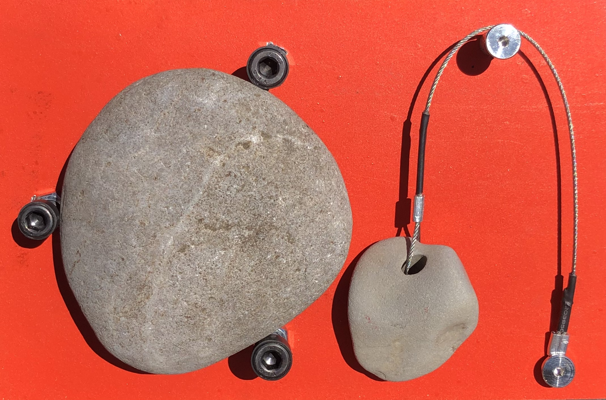

ROCKBELL
Strike one rock with another to trigger a ring. Replace a button with a mindful act.



ACHEULEAN LAB
Acheulean Lab is a design research project examining material culture.
Acheulean Lab aims to better understand what objects mean, how they make us feel, and how that affects the way they work. Challenging conceptions of object and material opens new models for design and production.
Turn over stones, open drawers, sift through fragments, decipher glyphs in the concrete, pick out faces in the fire, greet the names on the wall, listen closely to the groans of weary timber, ask how or when or why this or that got here or there or nowhere to be found; an awareness of the everyday is at the foundation of a more complete world. When the mundane is acknowledged as extraordinary the habitual becomes novel. Often, the most engaging phenomena are the inexplicable and uncertain, and sometimes the most important thing is what we have learned to ignore.
Project Etymology:
The Acheulean Handaxe is a cordiform biface stone tool manufactured by ancient humans across Africa Europe and Asia during the Lower and Middle Pleistocene. In use for over a million and a half years, from 1.7 to 0.1 Mya without revision, the Acheulean Handaxe is the most prolific designed object in history. Despite global distribution, the function of these artifacts is not known. It is unclear if the tool was used for its blade, as an object of ceremony, to convey status or worth, or served some function not yet imagined. The razor-sharp circumference yields an unwieldily edge, hinting that the handaxe purpose was more than pragmatic. The only certainty is the consistency of its form and technique of manufacture.
The Acheulean Handaxe is the origin of design; an object produced with intent through inherited cultural knowledge and technical skill. A constant presence in human lives for over a million years, this most simple object - a sharpened stone - still holds mystery. How absurd that we have managed to forget the purpose of something important enough to remember for a million years. Acheulean Lab pays homage to this universal human artifact and views it as both the archetype for successful design and a representation of the mundane.
The work produced in this lab is by nature an experiment. 2022 -
Areas of Research
Non-Graphic Interfaces Actant Objects Unclassified ExperimentsNon-Graphic Interfaces
Possibilities for human computer interaction that do not rely on visual systems. Alternatives to the digital displays that have come to dominate information transfer.
Strike one rock with another to trigger a ring. Replace a button with a mindful act.
How does the practice of healthcare change when we emphasize sensory information over absolute measurements and values? This thermometer reminds the user to pay close attention to signals from their body, and that sickness and health are more than binary. This device produces two tones, one effected by the user’s temperature. The device is tuned so a healthy temperature will align the two sound waves and a slight fever will prevent the tones from synchronizing. Place device to forehead and listen (closely) to your body.


Actant Objects
Objects that affect or respond to their environment. Dynamism through action and reaction to prevent sterility.
Working With Nature: A proposal for shellfish based water quality biosensors.
1) Concept: Computer vision system monitors shellfish motion in response to pollution in seawater (valvometry). A transparent enclosure circulates shellfish with fresh seawater. QR code on Enclosure housing links to sensor webpage. Enclosure tower provides habitat for native species (mussels represented). A network of sensors along a coastline provides real-time and historic information about local conditions, serving as an early warning for sewage or agricultural contamination. Track changing water conditions remotely, or verify in person beach is safe to swim/fish/collect shellfish. Images of SeeShell in different installations, tailored to local coonditions.


2) Context: RCA group projet. Responsible for research concept and images.


3) Form Exploration. Beacons, way points, and landmarks served as an aesthetic reference for this structure, implying to users that the tower was installed to provide site-specific information.

Unclassified Experiments
Projects for which a category has not yet been defined or where questions still search for their words.
A sheer and near weightless slip dress, made of a fully waterproof material. Stronger than steel by weight. Transparent armor, delicate impermeability. The wearer is fully presented but unaffected by outside forces.


Making the munndane absurd. Flexible rubber case for glasses.